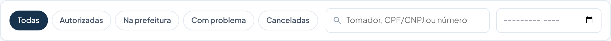

Minhas notas: status, PDF e XML
Onde ficam todas as notas da empresa, como achar uma nota, baixar os arquivos e resolver uma nota rejeitada.
checklist Antes de começar
- Aqui aparecem as notas emitidas pelo portal e também as que o sistema da sua empresa emitiu.
- A lista se atualiza sozinha enquanto a prefeitura processa uma nota.
-
Abra "Minhas notas"
No menu da esquerda, clique em Minhas notas. Se aparecer um número vermelho ao lado, há notas que não foram autorizadas e precisam da sua atenção.

Notas autorizadas mostram NFS-e e o número. Notas ainda sem número mostram DPS (o número do pedido). -
Ache a nota que você procura
- Clique em um filtro: Autorizadas, Na prefeitura, Com problema ou Canceladas.
- Ou digite na busca o nome do tomador, o CPF/CNPJ ou o número da nota.
- Para ver um mês só, escolha o mês no campo de data à direita.

-
Baixe o PDF ou o XML
Na própria linha da nota, clique em PDF ou XML. Ou clique na linha para abrir os detalhes e use Baixar PDF e Baixar XML.
O PDF é a nota para imprimir ou mandar ao cliente. O XML é o arquivo oficial, que o contador costuma pedir.

No detalhe também dá para emitir uma nova nota para o mesmo tomador sem digitar tudo de novo. -
Resolva uma nota rejeitada
Clique no filtro Com problema e abra a nota. A caixa vermelha mostra o que a prefeitura disse e como corrigir.

- O erro está nos dados da nota (CEP, CPF, valor...): corrija o cadastro e clique em Nova nota para este tomador.
- O problema era de fora (prefeitura fora do ar, cadastro da empresa já corrigido): clique em Reenviar. A mesma nota vai de novo.
O que cada status quer dizer
| Status | O que significa | Filtro |
|---|---|---|
| Na fila Processando | A prefeitura ainda está analisando. | Na prefeitura |
| Autorizada | A nota vale. PDF e XML disponíveis. | Autorizadas |
| Rejeitada Com erro | Não foi autorizada. Veja o motivo no detalhe. | Com problema |
| Cancelada | A nota foi cancelada e não vale mais. | Canceladas |
Se der errado
| O que aconteceu | O que fazer |
|---|---|
| Não acho a nota na lista. | Clique em Todas, apague a busca e limpe o mês. Notas antigas ficam nas próximas páginas (botão Próxima). |
| Não aparecem os links PDF e XML. | Eles só existem depois que a nota é Autorizada. |
| Não entendi o motivo da rejeição. | Mande um print do detalhe da nota para o suporte. O código entre parênteses (ex.: E0312) ajuda a achar o problema. |
← Voltar para a Central de Ajuda
Última revisão: 07/11/2026